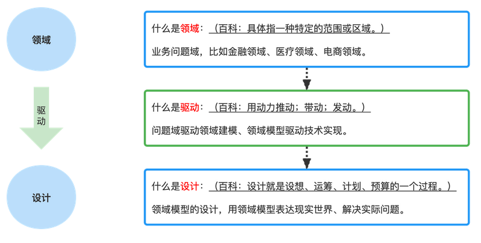

设计并不仅仅是感观，设计也是产品的工作方式。——乔布斯
相关知识链接：
10本DDD学习书籍推荐：https://zhuanlan.zhihu.com/p/591557293
https://www.163.com/dy/article/HSAK86HC05529XVP.html 领域驱动设计的几种典型架构介绍
DDD提供战略和战术上的建模工具。

DDD的战略设计工具可以帮助团队做出最有竞争力的软件设计选择和业务整合决策，组织将从这些明确反映其核心业务竞争力的软件模型中获得最大收益。
DDD的战术实施工具可以帮助团队设计出实用软件，它能对业务独一无二的运作方式进行精准地建模。
借助DDD，团队可以在当今竞争激烈的商业环境中持续地交付最有效的软件设计与实现。
管理层只会使用scrum控制交付节奏，对它最重要的信条之一：知识获取 视而不见。
先从高层次的业务问题开始，再谈论技术相关问题：
- 软件开发被视为成本中心而非利润中心。
- 开发人员热衷于技术并通过技术手段解决问题，而不是深入思考和设计，这会导致开发人员孜孜不倦地追逐技术上地新潮流。
- 过于重视数据库，大多数解决方案地讨论都是围绕数据库和数据模型，而不是业务流程和运作方式。
- 对于根据业务目标命名的对象和操作，开发人员没有给予应有的重视，导致交付的软件和业务所拥有的心智模型之间产生巨大的分歧。
- 业务干系人浪费大把时间闭门造车以实现各种无人问津的需求，或者只有一小部分能被开发人员采用。
- 频繁而又要求精准的项目估算会占用大量的时间和精力，导致软件交付延期。开发人员使用“任务板挪卡”而非考虑周详的设计导致他们造出了一个个"大泥球"，而不是业务驱动下恰当的分离模型。
- 开发人员在用户界面和持久层组件中构建业务逻辑。此外，开发人员也经常会在业务逻辑当中执行持久化操作。
- 数据库查询时常出现中断、延迟、死锁等问题，阻碍用户执行时间敏感型的业务操作。
- 项目中存在错误的抽象级别，表现为开发人员试图借助过度概括的方案满足所有当下以及臆想出来的未来需求，而不是解决实际而又具体的业务诉求。
- 在紧耦合服务群中，当一个服务执行操作时，该服务直接调用另一个服务并引发一个对等操作。这种耦合会经常破坏业务流程和未达成一致的数据，这样的系统很难维护。
不做设计将产生N多种设计（在一个N个人的团队中），在没有任何真正领域专家的协助下，开发出来的软件将会混杂N种不同的、虚构出来的、对业务语言的诠释。
不做设计并不能节约成本，而过度的设计也会造成浪费，提倡适度的设计。鼓励演进式的设计。优秀设计与有效设计是在持续的重构和迭代过程中产生的，每一次的设计优化都是从最大限度地满足客户的功能性需求和非功能性需求角度出发，以拥抱变化的心态来应对变幻莫测的需求。
无论怎样，都是在构建模型。比如古老的道路，从开始跑马车，到一些抄近路的人踩出了分岔路，并被改造的迂回曲折。现代道路都会依据人口、环境以及可预测的流量来规划和设计。两种类型的道路都会被建模。
两种不同的建模方式都是从业务价值的角度出发的。对于短期项目或产品，所承载的业务具有相当的时效性，要求团队快速地实现并上线，以获取更大地商业价值。这类模型提倡只做最基本和最简单地思考。而对于另一类项目或产品而言，组织会将其确定为战略核心并对其长期投资。要求团队适度地进行有效设计，不仅要考虑当下的交付规划，还要适当兼顾兼容性，可扩展性等未来的设计要求。这类模型需要业务和开发人员充分地展开讨论与分析。

战略设计： 运用限界上下文的战略设计模型来分离领域模型。当进一步深入到战略设计中时，将会学到子域（subdomain），并通过它处理遗留系统中无边界的复杂性，以及如何改进新项目的成果。

战术设计：打好战略设计的基础之后，将会发现DDD最为突出的莫过于战术层面的设计工具。战术设计犹如使用一把精小的画笔在领域模型上描绘着每个细枝末节。其中一个比较重要的工具被用来将若干实体和值对象以恰当的大小聚集在一起。这就是聚合（aggregate）模式。
DDD就是以最明确而又可行的方式对领域进行建模。使用领域事件既可以让你明确地建立模型，也可把模型内部发生地事情分享给需要知道这一切的系统。这些相关的系统可能是自己的本地限界上下文和其他的远程限界上下文。
============ 第二章 运用限界上下文与通用语言进行战略设计 =============
限界上下文是语义和语境上的边界。意味着边界内的每个代表软件模型的组件都有着特定的含义并处理特定的事务。限界上下文中的这些组件有特定的上下文语境和语义理据。
问题空间： 在给定项目的约束条件下进行高级战略分析与设计各个步骤的地方。
解决方案空间： 是真正实施解决方案的地方，这些解决方案在问题空间讨论中被识别为核心域。
当限界上下文被当作组织的关键战略举措进行开发时，被称为核心域。 核心域的识别是一个持续的精炼过程，把一堆混杂在一起的组件分离，以某种形式提炼出最重要的内容。（把最好的资源投入到核心域）
产品研发需要聚焦在最小化可行产品上，不断获取用户反馈，并在这个最小化可行产品上持续快速迭代，从而获得一个稳定的核心产品。在有限的资源下，为了使领域模型成为最有价值的资产，必须梳理出模型的真正核心，并根据这个核心来实现软件服务。
通用语言： 方便团队成员间交流，是软件模型团队日常交流时使用的语言，必须严谨、精确、紧凑。 软件模型的源代码就是这种语言的书面表达方式。 比如每个国家的官方语言。
限界上下文、团队和源代码仓库；
- 一个团队应该在一个限界上下文中工作。
- 每个限界上下文应该拥有一个独立的源代码仓库。
- 一个团队可能工作在多个限界上下文中，多个团队不应该在一个限界上下文中共事。
- 将同一个限界上下文中的验收测试、单元测试和主要源代码存放到一起。
- 明确一个团队只在单一的限界上下文中工作。别给其他团队留下任何机会修改源代码，从而引发意外。
不要在一个错误的领域投入过多的人力并尝试去做太多事情。
领域专家和业务驱动
业务干系人传递出的暗示会帮助技术团队做出更好的建模选择；而大泥球往往是由于软件开发人员无视业务专家的建议，一意孤行的结果。

保单在不同业务职能领域中的差异
承保保单：专门从事承保的业务领域中，保单会基于对被保险实体进行的风险评估而创建。 风评->计算保单保费
审核保单：负责审核需要投保的财产。承保部门一定程度上依赖于在审核过程中发现的信息；而在承保环节商定最终保费时，这些信息都会被参考；
理赔保单：理赔中的保单是根据承保环节制定的保险条款，来跟踪投保人理赔的赔付请求进度。索赔保单需要参考承保保单；
如果尝试将这三种保单类型合并成一个适合所有业务职能领域的单一保单概念，肯定会出问题。
DDD强调将这些不同的概念类型分离到不同的限界上下文中，以此拥抱这些差异，并且承认存在不同的通用语言和与之对应的职能；（三个限界上下文）
事实上，开发人员更加擅长在设计过程中不断地抽象对于客观世界地观察。如果这些概念被全盘接受，无形中就会形成过度设计的领域模型。因此在设计过程中，开发人员需要不断地向业务人员确认上下文地核心和必要概念，及时抑制过度设计的冲动。如果无法剔除不必要或不属于核心域的概念，那不久的将来会造就一批低价值的功能，而这些功能对于产品研发而言就是巨大的浪费。
战略设计是必要的根基
采用限界上下文和通用语言两种基本的战略设计工具帮助避免设计陷阱（单体应用设计的产生）
采用限界上下文会迫使我们回答“什么是核心？”的问题。它应紧紧地抓住战略举措中所有的核心概念，并排除其他概念，剩下的都应该是团队通用语言的一部分。
只有经过“仅限核心”的严格过滤之后保留下来的概念，才能成为拥有限界上下文的团队的通用语言的一部分。而其他的概念将会在限界上下文之外。限界上下文的边界强调其内部的严谨性。
测试收益： 使用限界上下文的设计，测试会聚焦于一个模型中，这样测试的数量会更少，执行更快。
如何确定核心？
两个重要的群体——领域专家和软件开发人员，整合成一个有凝聚力的协作团队。
领域专家更加关注业务问题。他们的想法会集中在组织如何运作的愿景上。 比如 scrum的业务领域中，scrum master就是领域专家。 它完全了解如何在项目中实施scrum。
产品负责人还是领域专家？
在某些情况下，他们可能是同一个人（一个人承担两种角色）。产品负责人更加关注管理和产品待办项的优先级排序，并时刻留意着项目的概念和技术是否保持着连续性。但并不意味着产品负责人天生就是领域内的业务核心竞争力方面的专家。要确保团队中有真正的领域专家，避免让缺乏必要专业技能的产品负责人代替领域专家。
在特定的业务领域中，领域专家的心智模型将会成为团队通用语言的坚实基础。
在DDD项目的实施过程中，开发人员需要尽量克制“以技术为中心”的冲动（搁置关于实现的技术细节）。以防无法接受以业务为中心的核心战略举措。
专注业务复杂性而非技术复杂性
之所以采用DDD，是因为业务模型的高度复杂。正因为业务模型比项目的技术特性更加复杂，才会使用DDD。 这也是开发人员必须与领域专家一起深入钻研业务模型的原因。
开发人员和领域专家都应该拒绝任何以文档为主要交流手段的倾向。最佳的通用语言是通过协作反馈循环而发展出来的，从中可以促成团队形成共同的心智模型。对当前知识领域的开放式讨论、探索和质疑都会深化团队对于核心域的认知。
在质疑中统一
什么是核心？ 就已然失控并无限扩展的业务模型而言，对它提出质疑并将其统一。及时剥离出与通用语言无关的概念。
从核心域分离出其他的建模概念，并被放到不同的限界上下文中，并且都要遵循各自的通用语言。
发展通用语言
通用语言是一系列通俗易懂的名词组成的吗？ 名词只是口头语中很小的一部分，开发人员在领域模型中往往不必过于强调名词；
不要将 核心域 局限在名词上。应当使用一组具体场景来表达核心域，这些场景描述了领域模型应该做的事情。 “场景”并不是指用例或用户故事这些软件项目中常见的概念。 对于场景的描述，不仅仅只是观察到它的表象，更是希望通过不断地协作认知更加清晰地描绘出“场景”背后的运作逻辑。
不要在建模工作中对文字场景、图画、图表这些文档长期保持同步花费过长的时间。这些文档并不是领域模型。它们只是辅助开发领域模型的工具。模型终将与代码融为一体。
应用场景（如何落地？） 如何把书面场景转换成某种用来验证领域模型是否符合团队需求说明的产出物。
- 采用 实例化需求的技术； 也被称为 行为驱动开发。
- 采用 可执行的需求说明作为验证领域模型的方法。 也可使用 单元测试框架达成同样的效果，通过它创建验收测试（不是单元测试）来验证领域模型；
通过这种方法达到效果： 协作发展并完善通用语言、团队共识建模，以及确定模型是否符合需求说明的要求。可以通过创建 验收测试达到这些效果。
这两种方法都会遵循 红——绿（失败——通过）的形式（TDD），需求说明首先会运行失败（因为待验证的领域模型还未实现）。通过一系列的验证失败，逐步完善领域模型，直到完全支持需求说明并通过验证（全绿）。这些验收测试将会直接与限界上下文相关，并保存在限界上下文的源代码仓库中。
举例：基于单元测试的验收测试 [Test]
场景：简短描述~.. 产品负责人提交待办项到冲刺中 Public void ShouldCommitBacklogItemToSprint()
假如.. 待办项已经为发布排期 var backlogItem = BacklogItemScheduledForRelease();
并且.. 有待办项的产品负责人 var productOwner = ProductOwnerOf(backlogItem);
并且.. 有需要承诺的冲刺 var sprint = SprintForCommitment();
并且.. 有法定数量的团队成员赞成承诺 var quorum = QuorumOfTeamApproval(backlogItem, sprint);
当.. 当产品负责人提交待办项到冲刺中 backlogItem.CommitTo(sprint, productOwner, quorum);
那么.. 待办项被提交到冲刺中 Assert.IsTrue(backlogItem.isCommitted);
并且.. 待办项已提交的事件被创建
如何持续?
早期发展的通用语言随着岁月的流逝不断成长，它终将可能不那么重要，这需要一个相当长的一段时间。它是组织对于核心举措的全部承诺。如果不能做出长期承诺，那么今天所开发的模型真的是组织的战略差异性所在，即核心域吗？
架构
当使用 端口（port）和 适配器（adapter）的架构图时（这种架构被称为六边形架构），限界上下文的组成绝不仅仅只是一个领域模型。
下面这些层次在限界上下文中很常见：
- 输入适配器（input adapter）: 用户界面控制器、rest终端节点和消息监听器；
- 编排用例
- 管理事务的应用服务（application server）
- 领域模型
- 输出适配器（output adapter）: 持久化管理、消息发送器


与技术无关的领域模型（领域模型本身与技术无关）
虽然在整个架构体系中遍布着各种技术，但领域模型本身与技术无关。这也是为什么事务是由应用服务管理，而不是由领域模型来管理的原因。
六边形架构：
和传统的 数据——应用——展现的 自下而上的三层应用结构不同，端口和适配器的 应用——端口——适配器是由内向外的三层架构。它将核心业务逻辑（应用层或领域层）和外层的API接口（端口层）以及外部各种具体实现的依赖（适配器层），如各种前端界面、数据库、第三方服务、消息机制等解耦。通过依赖注入等手段让架构更具灵活性和可扩展性的同时，也让团队把更多精力聚焦在核心的应用层（领域模型）上。
可以使用 端口和适配器作为一种基础架构，但这不是在DDD中唯一可用的架构。除了端口和适配器，还可以在DDD中使用任何架构或架构模型，并可以根据需要进行匹配或是混合使用。
（1）事件驱动架构，事件溯源。
（2）命令和查询职责分离（CQRS）：和传统的CRUD模型不一样，它把同一个模型的无副作用查询操作和改变状态的修改操作（通常称为命令）分开。两部分可以分别在不同的模块和服务实现，可以分别部署到不同的硬件或基础设施上，甚至可以使用完全不同的数据存储方式。
（3）响应式架构和 Actor模型：每个Actor都可以被看成是一致性边界和一个独立的业务单元，可以和DDD中的聚合概念完美对接。
（4）具象状态传输（REST）：REST会在DDD的上下文映射中得到应用；REST并不是真正意义上的标准，对它的理解和实现百花齐放。REST也不是唯一的选择，还有gRPC和graphQL等替代方案。
（5）面向服务的架构（SOA）：是一个组件模型，它将应用程序的不同功能单元（称为服务）通过这些服务之间定义良好的接口和契约联系起来。
（6）微服务设计： 微服务本质上等同于 DDD中的限界上下文： 微服务的边界（粒度）是一个设计决策，没有一个标准答案。微服务的划分是架构设计层面，需要从几个方面考虑：
- 现有架构之间的依赖关系
- 业务上的可扩展性
- 团队目前的人员能力
- 实现过程中可能遇到的风险与挑战
（7）云计算和微服务以一样的方式得到支持： 充分利用云计算优势构建和运行的应用被称为云原生（Cloud Native）应用，企业需要借助构建和运行云原生应用和服务的平台，来自动执行并集成 devops、持续交付、微服务和容器等概念。
============ 第3章 运用子域进行战略设计 ============
DDD项目中总会碰到很多限界上下文。这些限界上下文中一定有一个将称为核心域， 而其他的限界上下文中也会存在许多不同的子域。限界上下文与子域之间一一对应。在某些情况下，一个限界上下文中有可能存在多个子域。
什么是子域？
子域是整个业务领域的一部分。 子域代表的是一个单一的、有逻辑的领域模型。大多数的业务领域都过于庞大和复杂，难以作为整体来分析，一般只关心那些必须在单个项目中涉及的子域。子域可以用来逻辑地拆分整个业务领域，这样才能理解存在于大型复杂项目中的问题空间。
也可以认为子域是一个明确的专业领域，假设它负责为核心业务提供解决方案。这意味着特定的子域将会有一位或多位领域专家领衔，他们非常了解由这些特定子域促成的业务的方方面面。对业务而言，子域也有或多或少的战略意义。
如果通过DDD来创建子域，它将会被实现成一个清晰的限界上下文。特定业务的领域专家将会成为共建限界上下文团队中的一员。
子域类型（项目中有三种主要的子域类型）
- 核心域（sub domain）:它是一个唯一的、定义明确的领域模型，要对它进行战略投资，并在一个明确的限界上下文中投入大量资源去精心打磨通用语言。它是组织中最重要的项目。
- 支撑子域（supporting subdomain）: 这类建模场景提倡的是“定制开发”，因为找不到现成的解决方案。对它的投入无论如何也达不到与核心域相同的程度。也许会考虑使用外包的方式实现此类限界上下文，以避免因错误地认为其具有战略意义而进行巨额的投资。这类软件模型也非常重要，核心域的成功离不开它。
- 通用子域（generic subdomain）：通用子域的解决方案可以采购现成的，也可以采用外包的方式，或者由内部团队实现，不用为其分配与核心域同样的优质的研发资源，甚至都不如支撑子域。
应对复杂性
子域可以作为讨论问题空间的工具。
有些遗留系统与强调限界上下文的DDD设计方式大相径庭，甚至可以称为无边界（unbounded）遗留系统（大泥球）。大泥球内充满了多个错综复杂的模型，这些模型本应被分别设计并实现，但当它们纠缠在一起时，整个系统会乱作一团。

当使用DDD时，限界上下文应该与子域一一对应（1:1），也就是，如果存在一个限界上下文，那么它的目标就应该是对应且只对应一个子域模型。尽量以这种方式建模。这样可以使限界上下文清晰并且始终专注于核心战略举措。
如果必须在同一个限界上下文（核心域）中创建第二个模型，应该使用一个完全独立的模块将该模型从核心域中分离出来（DDD中的模块基本等同于scala和java中的包）。DDD通过清晰的语言声明了一个模型是核心，而另一个只是它的支撑。
============ 第4章 运用上下文映射进行战略设计 ============
所有不属于核心域的概念都会被迁移到其他某个限界上下文之中。
如果 核心域 和其他限界上下文集成，这种集成关系在DDD中称为上下文映射。

映射的种类
（1）合作关系： 存在于两个团队之间。 每个团队各自负责一个限界上下文。 两个团队通过互相依赖的一套目标联合起来形成合作关系。 由于相互之间联系紧密，经常会同步日程安排和相互关联的工作，使用持续集成对保持集成工作协调一致。两个团队之间的一致步调使用粗的映射线段表示。粗线段表示两个团队之间彼此需要高度承诺。
保持长期的 合作关系 很有挑战性，只有能发挥彼此优势时才维持合作关系，而随着承诺的消失，优势不复存在，这种合作关系这时候应该被 重新映射成另外一种关系。

（2）共享内核： 两个限界上下文交集； 两个（或更多）团队之间共享着一个小规模但却通用的模型。团队必须就要共享的模型元素达成一致。 有可能只有一个团队会维护、构建和测试共享模型的代码。比如公共能力、基础设置、底座；甚至例如开源社区等。
（3）客户——供应商： 两个限界上下文之间和两个独立团队之间的一种关系；供应商位于上游（U），客户位于下游（D）。供应商是支配者角色。客户需要与供应商共同制定规划满足各种预期，最终由供应商决定客户获得的是什么以及何时获得。

（4）跟随者：存在于上游团队和下游团队之间，上游团队没有任何动机满足下游团队的具体需求。由于各种原因，下游团队也无法投入资源翻译上游模型的通用语言来适应自己的特定需求，只能顺应上游的模型。比如安卓操作系统-和搭载的各种应用。
（5）防腐层（Anticorruption Layer）：是最具防御性的上下文映射关系，下游团队在其通用语言（模型）和位于它上游的通用语言（模型）之间创建了一个翻译层。防腐层隔离了下游模型与上游模型，并完成两者之间的翻译。（比如 data_type -> event_type的映射关系）。但凡有可能，就应该尝试在下游模型和上游集成模型之间创建一个防腐层，这样就可以在你这端的集成中创造出特别适合业务需求的模型概念，并将外部概念完全的隔离。但成本可能也会较高。
防腐层可能导致的问题：
- 防腐层可能增加两个系统之间的通讯延迟
- 防腐层增加了额外的服务，需要管理和维护
- 防腐层需要考虑如何扩展
- 确保维护事务和数据一致性，并且可被监控
- 如果防腐层是系统迁移战略的一部分，则需要考虑防腐层是否是永久的，是否在遗留系统功能完全迁移完成后将其移除
相关模式：Facede API模式、适配器模式
应用场景：渐进式架构迁移，需要维护遗留系统和新系统之间的集成；

（6）开放主机服务（Open Host Service）：会定义一套协议或接口，让限界上下文可以被当作一组服务访问。该协议是“开放的”，所有需要与限界上下文进行集成的客户端都可以相对轻松地使用它。通过应用程序编程接口（API）提供的服务都有详细的文档，用起来也很舒服；团队2作为团队1的跟随者，没有时间在这端的集成中创建隔离用的防腐层。 开放主机服务的语言比其他类型的系统语言更易用。
REST服务就是一种最常见的开放主机服务实例。实现开放主机服务相对来说是一种成本较高的集成方式。它的API提供给许多下游上下文使用，所以要求接口实现要做到足够的兼容性、可伸缩性、健壮性。同时开放主机服务还要提供易用的文档，因此通常会和已发布语言一起使用，采用主流协议定义API。

（7）已发布语言（Published Language）是一种有着丰富文档的信息交换语言，可以被许多消费方的限界上下文简单地使用和翻译。需要读写信息地消费者可以把共享语言翻译成自己的语言。这种已发布语言可以用XML Schema、JSON Schema或更佳的序列化格式定义，比如Protobuf。同时提供和使用已发布语言的开放主机服务可以为第三方提供最佳的集成体验。这种结合使得两种通用语言之间的转译非常方便。

（8）各行其道（Separate Way）描述了一种情况：使用各种通用语言与一个或多个限界上下文集成这样的方式不能产生显著的回报。所寻求的功能并不能由任何一种通用语言提供，那么只能在限界上下文中创造属于自己的特殊解决方案，并放弃针对这种特殊情况的集成。

（9）大泥球：如何把系统推向大泥球深渊；如果必须与这样的大泥球系统集成，尝试对每个这样的遗留系统创建一个防腐层，保护自己的模型免受污染，否则会陷入难以理解的泥潭。
- 越来越多的聚合因为不合理的关联和依赖而交叉污染
- 对大泥球的一部分进行维护就会牵一发而动全身，解决问题的同时又造出了一堆问题。
- 只剩下“部落知识”（存在于部落中的知识或信息，不被外界所知，没有记录，只能口口相传）和“个人英雄主义”，唯有同时“讲”出所有语言的极个别超人，才能支撑住脆弱的系统。（对系统了如执掌）。

（10）善用上下文映射：提供特定接口和指定的限界上下文集成；主要取决于 负责这个限界上下文的团队提供的是什么。可以是基于SOAP的RPC，也可以是基于资源的RESTful的接口，或是使用队列或发布订阅的消息机制。或者使用数据库或文件系统集成（不推荐这两种方式），基于数据库的集成方式是一定要避免的，如果不得不以这种方式进行集成，需通过防腐层隔离需要集成和适配的模型。
- 基于SOAP的RPC：背后思路是让调用另一个系统的服务如同调用一个本地过程或方法一样简单（特别依赖网络），且意味着客户端限界上下文和提供服务的限界上下文之间存在着紧耦合。网络和紧耦合问题影响着系统使得系统缺乏健壮性。如果选择RPC作为集成方式，应该考虑采用现代的RPC机制（gRPC、Thrift等）。
- RESTful HTTP：效果好，支持REST接口的服务端限界上下文应该提供开放主机服务和已发布语言。资源理应被定义成已发布语言。弊端：网络和服务提供商故障、延迟等；不要把模型中的聚合暴露成资源，服务端模型一旦发生变化，资源也会随之改变，这样会把跟随着关系强加给每个客户端。应该根据客户端驱动的用例设计出“合成”的资源（客户端想要的样子和数据结构），而不是直接给出实际的领域模型。
- 消息机制：使用异步消息机制进行集成。 可以通过客户端限界上下文订阅由它自己或另一个限界上下文发布的领域事件。 使用消息机制是最健壮的集成方式之一，可以消除那些和阻塞（同步）形式（如RPC和REST）有关的暂时性耦合。可以基于REST对有序增长的资源集合进行轮询达到异步消息机制的效果。


避免集成火车事故：C0、C1、S1之间容易发生“集成火车事故”。可以使用异步消息机制来避免。

---------------------------
通常情况下、领域事件由限界上下文中的 聚合（aggregate）发布，对它感兴趣的订阅方限界上下文都可以消费。 当订阅方限界上下文收到领域事件时，将依据其类型和值进行一些操作。一般会在消费方限界上下文中有新聚合的创建或现有聚合的修改。
领域事件的消费者是跟随者吗？
消费者不应该使用事件发布者定义的事件类型。只应该依赖事件的格式（即它们的已发布语言）。如果事件以JSON格式或者更高效的对象格式发布，那么消费者应通过解析它们获取其数据属性来消费该事件。
消息机制应支持至少一次投递来保证所有消息最终都会被收到。也意味着订阅方限界上下文必须实现成幂等接收者（消息丢失、接收者相应不及时、宕机等情况下消息重发，接收方使用消息去重、要么使用幂等）。
上下文映射示例：发布一个领域事件、这个领域事件通过消息订阅提供出去。


在增强事件与反向查询之间的权衡？
有时填充足够多的数据增强领域事件来满足所有消费者的需求是有好处的。有些时候保持轻量的领域事件并让消费者在需要更多数据时进行查询会更有利。所以视情况平衡地混合使用两种方法。

============ 第5章 运用聚合进行战术设计 ============
什么是实体？
一个实体模型就是一个独立的事务。每个实体都拥有一个唯一的标识符，可以将它的个体性和所有其他类型相同或者不同的实体区分开。
聚合是什么？
是由一个或多个实体组成，其中一个实体被称为聚合根（Aggregate Root）。聚合的组成还可能包括值对象。
每个聚合的根实体（root entity）控制着所有聚集在其中的其他元素。根实体的名称就是聚合概念上的名称。
什么是值对象？
一个值对象（值），是对一个不变的概念整体所建立的模型。在这个模型中，值就真的只有一个值。和实体不一样，它没有唯一标识符，而是由值类型封装的属性对比来决定相等性。一个值对象不是事物，而是常常被用来描述、量化或者测量一个实体。
每个聚合都会形成保证事务一致性的边界（聚合边界）。意味着在一个单独聚合中，在控制被提交给数据库的事务时，它的所有组成部分必须根据业务规则保持一致。一个聚合要建立概念上完整的模型。
事务边界由商业动机决定，任何时候都是业务来决定对象集的有效状态应该是什么（如果聚合没有保存在一个完整有效的状态中，那么根据业务规则所执行的业务操作会被认为是错误的）。
聚合设计的普遍规则：在单次事务中只能修改一个聚合实例并提交。这是聚合被认为是事务一致性的边界的原因。可以按照能让事务保持一致性和提交成功的方式来设计聚合组成部分。
聚合的经验法则（聚合设计的四条基本规则）
- 在聚合边界内保护业务规则不变性：聚合的组成部分应该由业务最终决定，并且以在一次事务提交中必须保持一致的内容为基础。
- 聚合要设计的小巧（单一职责原则）：每个聚合的内存占用空间和事务包含范围应该相对较小；每个聚合可以更容易的实现（因为每个关联到它的任务都可以由一个开发者掌控，也意味着聚合更容易测试）。
- 只能通过标识符引用其他聚合：使用标识符的好处：聚合可以使用任何类型的持久化机制轻松地存储，包括关系型数据库、文档数据库，键值型存储以及数据网格结构。 （可以研究下 apache geode项目）；
- 使用最终一致性更新其他聚合：领域事件由一个聚合发布并由感兴趣的限界上下文订阅。消息机制通过发布/订阅的方式把领域事件传递给感兴趣的限界上下文。感兴趣的限界上下文可能和发布领域事件的限界上下文是同一个，也可能是另外一个。


可以在一次原子数据库事务中提交对两个甚至更多聚合的修改（在事务一定能提交成功的场景中使用这种方式）
在其他场景中使用最终一致性方法。
建立聚合模型
贫血领域模型： 如果使用面向对象的领域模型，这些模型除了公有访问器（getter 和 setter）之外没有包含任何真正的业务行为，这就是贫血领域模型；如果在建模过程中过于注重技术而忽略了业务就会造成这种结果。
注意别把领域模型中的业务逻辑放到上层的应用服务中。请把业务逻辑放到领域模型之中，不然就要忍受贫血领域模型带来的问题。
实际上ORM只是一种资源库的具体实现方式，它不属于领域模型的一部分，它映射出来的对象也不能简单地直接当作领域模型中的聚合和实体。
每个聚合根实体都必须拥有全局唯一标识符；
tenantid 将根实体的范围限制在订购了产品的指定组织之内。
productid将product与同一租户内的所有其他同类型实例区分开。
值对象的使用：tenantid和productid都被建模成不可变的值对象。
public class Product: Entity
{
private string description;
private string name;
private ProductId productId;
private TenantId tenantId;
}
public class Product: Entity
{
...
public string Description {get; private set;}
public string Name {get; private set;}
}

慎重选择抽象级别
有效的软件模型总是建立在一套对业务行为方式的抽象之上；
- 软件模型的语言无法匹配领域专家的心智模型
- 抽象级别过高，当开始对每个独立概念类型进行建模时会陷入麻烦
- 会导致每个类中都有特殊情况产生，并且可能造成使用通用方法去解决具体问题的复杂的类层次结构
- 因为试图要先去解决无关紧要的无解问题，将会编写比实际需要多得多的代码
- 错误抽象的语言会殃及用户界面，并且给用户带来困扰
- 会浪费大量时间和金钱
- 永远无法预先满足未来所有的需求，意味着未来如果增加新的概念，现有模型对这些需求的预判会被证明是失败的
不要被实现高度抽象的陷进吸引，要根据团队精炼过的领域专家的心智模型，脚踏实地地对通用语言进行建模。通过对当下地业务需求进行建模，将省去大量时间，预算和代码，并且避免了不必要的麻烦。更重要的是将通过建立能体现有效设计的准确且实用的限界上下文模型来为业务提供有效的服务。
大小适中的聚合
- 聚合要设计的小巧， 每个聚合一开始创建时只允许包含一个实体，并且它将作为聚合根。
- 聚合边界内保护业务不变性
- 基于响应的更新可以等待多长时间？ 即时发生、一段时间后发生
- 对每一个即时发生的时间范围，应考虑把这两个实体合并到同一个聚合的边界之内
- 对每一个在给定等待时间内更新的响应聚合“利用最终一致性更新其他聚合”

业务并不会强求每个聚合都符合 即时一致性标准。最终一致性是由业务驱动的，而不是由技术驱动的。只有业务才能决定发生在各种实体之间的更新的可接受时间范围。有些时间范围是即时或事务性的，意味着它们必须由同一个聚合管理。有些时间范围是最终一致的，意味着可以通过领域事件和消息机制进行管理。
可测试的单元
应该将聚合封装设计得合理，让它们更适合单元测试。复杂的聚合难以测试，建立可测试的聚合模型。
============ 第6章 运用领域事件进行战术设计 ============
领域事件是一条记录，记录着在限界上下文中发生的对业务产生重要影响的事情。
业务领域中存在因果关系的操作 —— 一个操作会由另一个操作引起——在分布式系统的每个独立节点中它们被观察到的发生顺序都是一样的，这就是业务领域提供的因果一致性。意味着存在因果关系的操作必须按照特定的顺序发生，如果前一个操作没有发生，那么后面的操作就不能发生。因果的线性系统架构可以通过创建并发布顺序正确的领域事件轻松实现。
设计、实现并运用领域事件

public interface DomainEvent
{
Public Date occurredOn
{
get;
}
}
领域事件类型的名称应该是对过去发生的事情的陈述，即动词的过去式。领域事件的名称和属性组合在一起才能完整记录领域模型中发生的事情。
领域事件 ProductCreated 必须包含导致 Product被创建出来的那条命令提供的所有属性；


一旦领域事件被保存到了事件存储中，就可以发布给任何对它感兴趣的订阅方。这可能发生在自己的限界上下文中也可能发生在外部的限界上下文中。

只是按照因果顺序保存领域事件并不能保证这些事件会以同样的顺序到达其他的分布式节点。因此识别出正确的因果关系落到了消费事件的限界上下文。

事件溯源
对所有发生在聚合实例上的领域事件进行持久化，把它们当作对聚合实例变化的记录（存储的是发生在聚合上的所有独立事件，而不是把聚合状态作为一个整体进行持久化）。
一个聚合实例上发生的所有领域事件，按它们原本发生的顺序，组成了该实例的事件流。事件流从聚合实例上发生的第一个领域事件开始，到最近发生的领域事件结束。当指定的聚合实例上发生了新的领域事件时，新的领域事件被追加到该实例事件流的末尾。在聚合上重新应用事件流，可以让它的状态从持久化存储中被重建到内存中。
事件存储就是一个顺序存储集合或者一张表，所有领域事件都被追加到其中。
性能意识：如果关注的重点之一是性能，需要了解缓存和快照知识。
使用事件溯源优势：它在独立事件级别保存了 核心域 中发生的一切。这从各个方面对业务产生非常大的帮助，比如合规性检查和数据分析等。
============ 第7章 加速和管理工具 ============
建立软件模型是 一个学习、试验、质疑、再学习和重建模型的过程。
应付时间压力的普遍手段可能是牺牲设计来节省时间和缩短周期。 运用一些方法，面对时间限制时做出最佳设计。
事件风暴
快速的设计技术。
领域专家和开发人员一起参与，它聚焦于业务和业务流程。
事件驱动建模 —— 可能会用到非常轻量的UML（可以用白板也可以用工具），并以事件为中心的建模。
使用便利贴（快速学习和进行软件设计）
- 有很强参与感， 业务人员和开发人员在平等基础上学习，每个人都可以使用通用语言提出建议
- 每个人都聚焦于事件和业务流程，而不是类和数据库；
- 高度视觉化方法，消除了试验过程中的代码，让每个人平等的参与到设计过程中
- 实施起来非常快，投入成本低（通过头脑风暴得出粗略形式的核心域模型）
- 团队成员取得对业务理解的突破，更深入的认识
- 每个人都能学到东西。
- 可以尽早、尽快地在模型和认知中识别出问题，扫除误解并将结论作为新的见解善加利用
- 宏观的建模和设计级别的建模都可以使用事件风暴
- 不必强求一次风暴讨论就能解决所有问题，多做几次，将会深入理解 核心域以及它周边子域之间的集成
（1）通过创建一系列写在便利贴上的领域事件，快速梳理出业务流程
- 创建 领域事件 时要强调 优先和主要关注的是业务流程，而不是数据及其结构
- 把每个 领域事件的名称写在一张便利贴上。事件的名称应该是动词的过去式
- 把写好事件的便利贴按照时间顺序放在建模平面上，按照每个事件在领域中发生的先后顺序从左到右排列
- 按照业务流程，有些领域事件会和其他事件并行发生，把这些事件摆放在同时发生的领域事件下方
- 有时 领域事件 将导致一个需要执行的流程。
（2）创建导致每个领域事件发生的命令。有时，领域事件由其他系统中发生的事情引发，作为结果流入系统中。
（3）把命令和领域事件通过实体/聚合关联起来，命令在实体/聚合上执行并产生领域事件的结果。实体就是命令执行和领域事件触发的数据载体。
实体 是对业务对象的抽象，属于解决方案； 聚合 由一个或一组实体组成，也属于解决方案。
建立 聚合（可以理解实体 或者干脆叫数据） 模型的指南：
- 把命令和领域事件便利贴一起贴在聚合便利贴上
- 沿着业务流程的时间线移动， 重点对业务流程建模，而业务流程是按时间发生的
- 当思考和各种操作相关的数据时，可能会发现新的领域事件。将新发现的领域事件和对应的命令和聚合记录下来，放在建模平面上。
（4）在建模平面画出边界和表示事件流动的箭头连线
- 有可能在以下条件满足时发现边界：部分分界出现时、不同业务人员对相同术语的定义出现冲突时，或者非常重要但不属于核心域的某个概念时。
（5）识别用户执行操作所需的各种视图， 以及不同用户的关键角色

其他工具
（1）引入按照 “假如/当/那么（Given/When/Then）格式编写的可执行的高级需求说明，也被称为验收测试
（2）影响力地图（Impact Mapping）
（3）用户故事地图（User Story Mapping）
在敏捷项目中管理DDD
拒绝估算： 让团队更关注交付价值而不是浪费精力去做不准确的无意义的估算；
（1）运用SWOT分析法：优势、劣势、机会、威胁；
（2）建模Spike（探测，一般用来探测可行性）和建模债务（类比技术债务）
项目启动阶段几乎都需要 Spike，使用 事件风暴可以大大降低必要的投资成本； 当有时间限制时，根本没有足够的时间尽善尽美地完成所有想要的建模任务。
Idea ——> Plan
任务识别与工作量估算
事件风暴可以在任何时间使用，并不会局限在项目启动阶段中； 事件风暴的产出物中可能有 领域事件、命令和聚合等；这些都可以当作估算单元..
将当前冲刺（迭代或WIP）中所有组件的估算单元相加，得到总的估算；
找到节奏之后，调整估算度量指标、使其更加准确，更加符合实际。可能需要几个冲刺找到感觉。
组件类型 | 简单（小时） | 适中（小时） | 复杂（小时） |
领域事件 | 0.1 | 0.2 | 0.3 |
命令 | 0.1 | 0.2 | 0.3 |
聚合 | 1 | 2 | 4 |
用户界面组件 | ... | ... | ... |
服务 | ... | ... | ... |
持久化操作 | ... | ... | ... |
测试用例 | ... | ... | ... |
限制建模时间
可以将每个花费数小时的组件直接保留为单个任务，也可以将这些任务进一步分解（但分的不要太细），甚至可以将单个聚合使用的所有命令和领域事件合并为一个任务。

如何实施？
- 开展一次快速的 事件风暴谈论（1h左右）来发现更多的具体场景
- 和领域专家一起讨论一个或多个需要完善的具体场景。识别软件模型的使用方式。
- 创建一组验收测试（或可执行的需求说明）来验证每个场景
- 创建让这些测试/需求可以执行的组件。持续（短平快）迭代来优化测试/需求说明和组件，直到达到领域专家的期望
- 某些迭代可能激发对其他场景的思考，创建额外的测试/需求完善现有组件并创建新组件
和领域专家打交道：合理地协调领域专家的时间
=== END ===